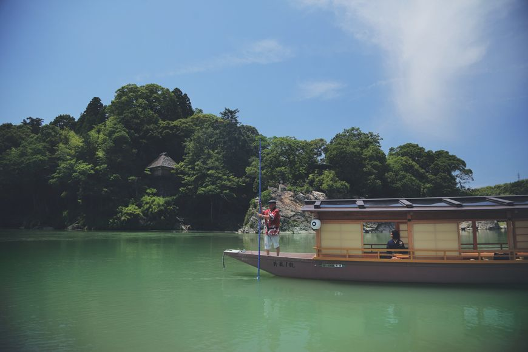
大洲で何を体験できる？
きょうの行事と、この先2週間の予定。城に泊まる、まちを歩く体験と、季節の見どころまで。申し込みと予約は、各行事・施設の案内から。
季節の見どころと、この先2週間の行事
行事が始まる日。押すとその行事へ
大洲市・Visit Ozu で日付を確かめた行事を載せています。お出かけの前に、各行事の案内で最新の情報をご確認ください。
横に送って選ぶ。予約と空きは各公式で。
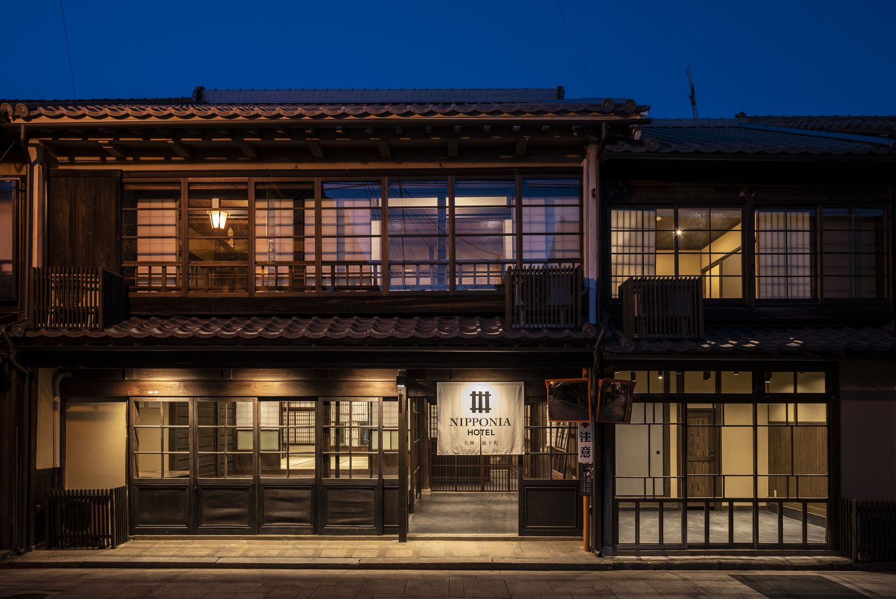
城下町に点在する町家に分かれて泊まり、まちを歩いて食事へ向かう。
公式 ↗
明治30年代の数寄屋（建物は国の重要文化財、庭園は国の名勝）。毎日9時〜17時に開いている。
公式 ↗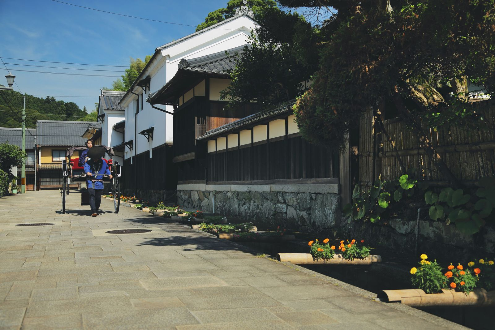
おはなはん通り、赤煉瓦館、まちの駅あさもや。町家に入った店を、志ぐれ片手にはしごする。
まちのガイド ↗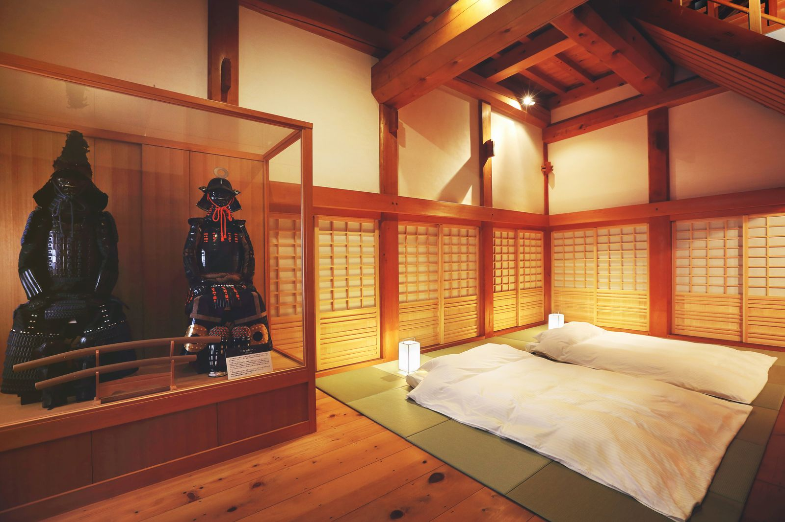
木造で復元した天守に泊まる。入城の場面を再現し、鉄砲隊の祝砲と地域の伝統芸能が迎える。
公式 ↗大洲城の本丸で、決まった日に開かれています。
大洲城本丸。実物の火縄銃による演武を、毎月第2土曜の14時から公開している。観覧無料。
大洲城 ↗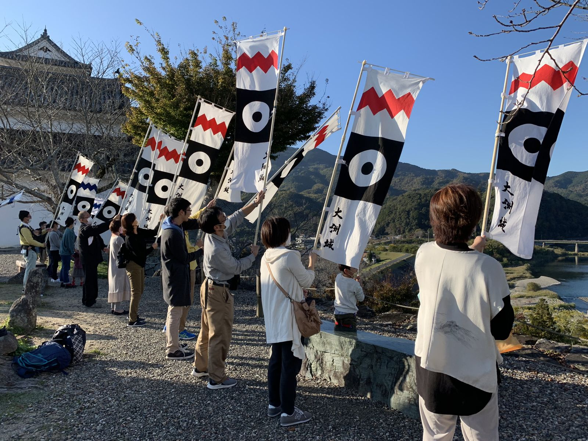
観光列車「伊予灘ものがたり」が肱川の鉄橋を渡るとき、大洲城本丸から旗を振って迎える。土・日・祝日の2回、だれでも参加できる（無料）。時刻は大洲城の公式で。
大洲城 ↗大洲は一年を通して「見頃」が入れ替わるまちです。
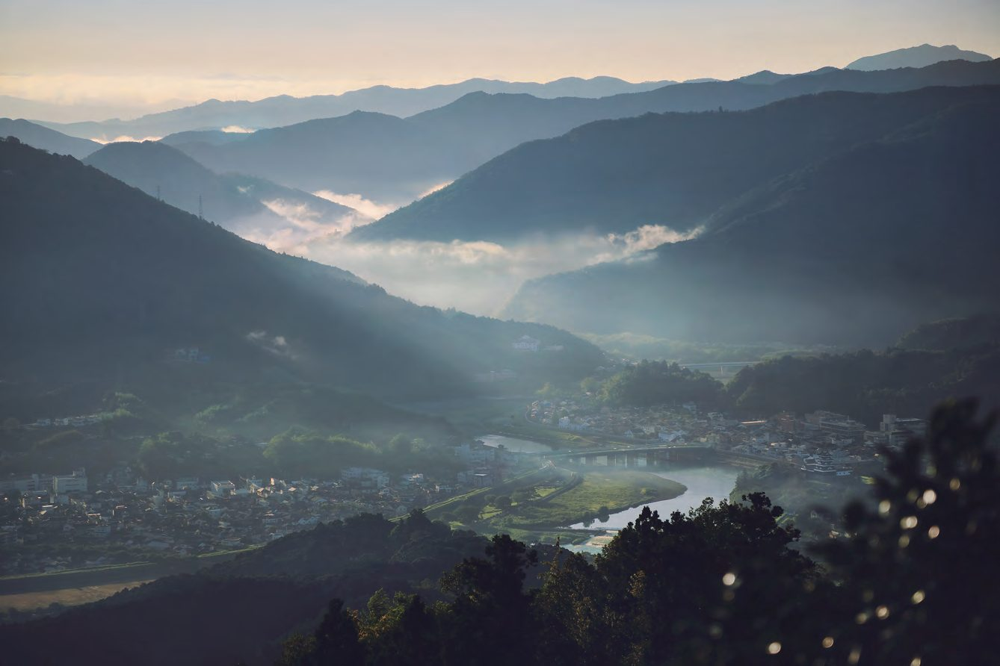
1月JANUARY
冬期（11月頃〜3月頃）
流域で冷えた霧が川面を海へと流れ下る、大洲でしか見られない気象現象。冷え込んだ晴れの朝が狙い目です。
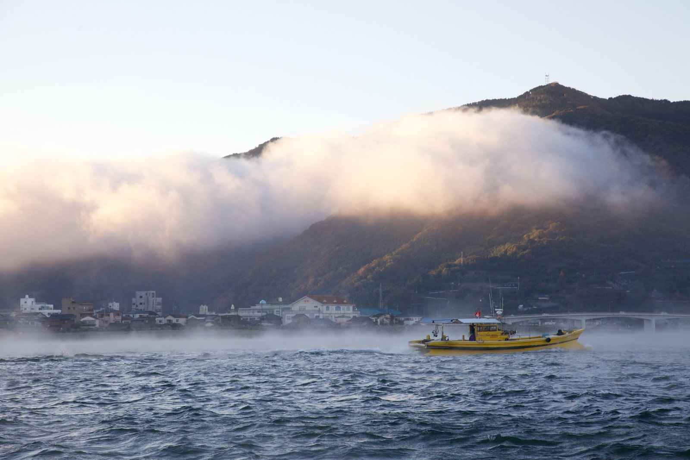
2月冬の朝の霧FEBRUARY
冬期
盆地のまちが朝霧の底に沈み、雲海が広がります。カメラを持った人たちが早朝のまちに現れる季節。
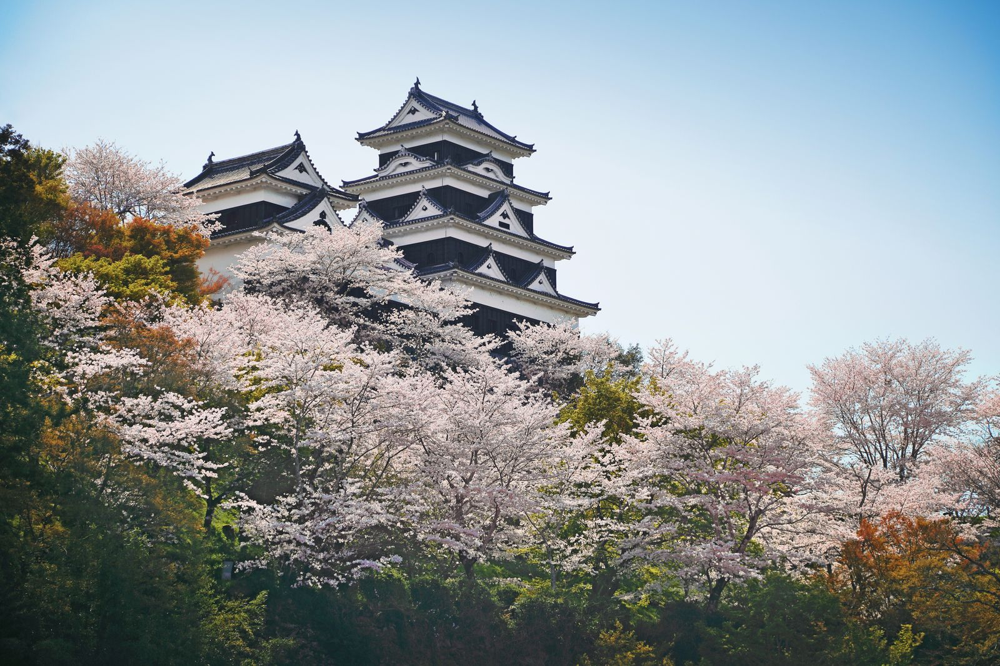
3月大洲城の桜MARCH
下旬〜
大洲城の桜が開きはじめます。見頃の速報はこのLINEでお知らせします。
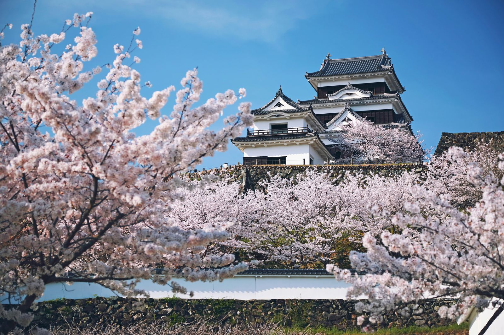
4月大洲城の桜APRIL
上旬
市民の寄付も集めて2004年に木造復元された天守と、桜。大洲の春のいちばんの見どころです。
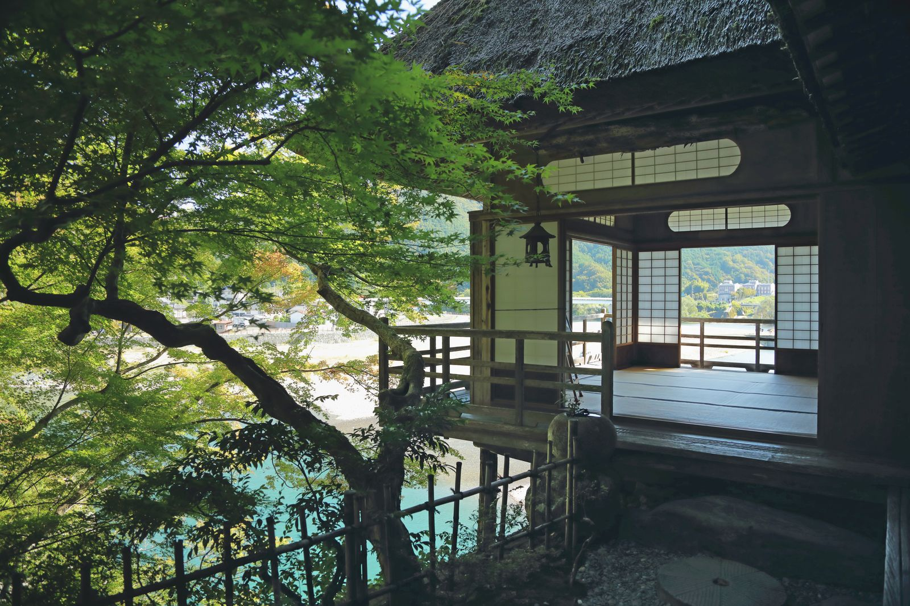
5月臥龍山荘の青もみじMAY
5月中
明治の数寄屋の名建築と、若葉の緑。紅葉と並ぶもう一つの見頃です。
JUNE
 7月大洲のうかい
7月大洲のうかい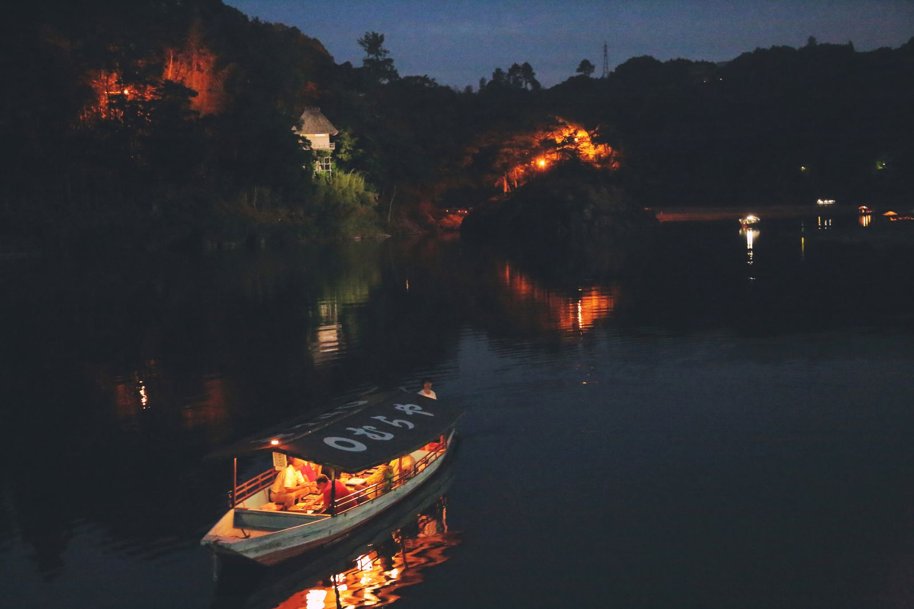
8月夏の夜の肱川AUGUST
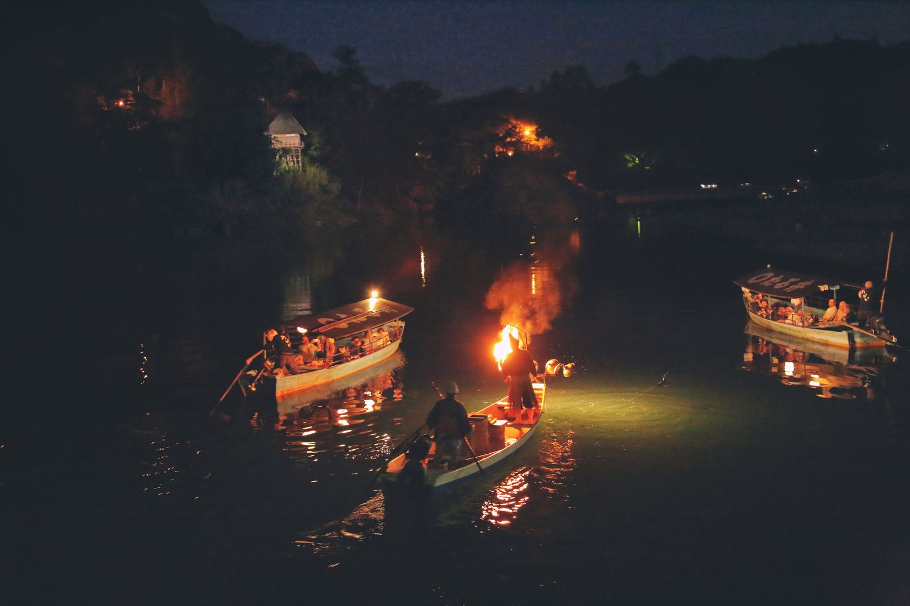
9月大洲のうかい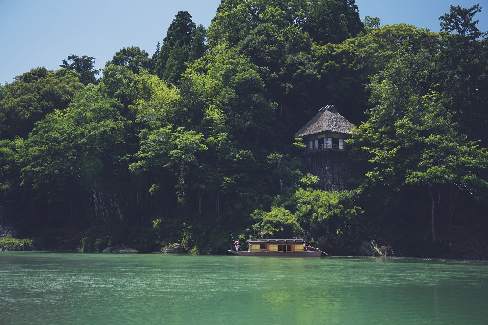
10月肱川 11月城下のMACHIBITO
11月城下のMACHIBITONOVEMBER
2026年は11月28日・29日
100年前の賑わいを再現するクラフト＆フードイベント。第1回は2017年11月25・26日に開催されました。開催情報はLINEでお知らせします。
Visit Ozu ↗11月中
国重要文化財の数寄屋建築と、肱川の淵にもみじが映える季節。一年でいちばん臥龍山荘が美しい頃です。
冷え込む朝
霧が川面を走る朝が始まります。
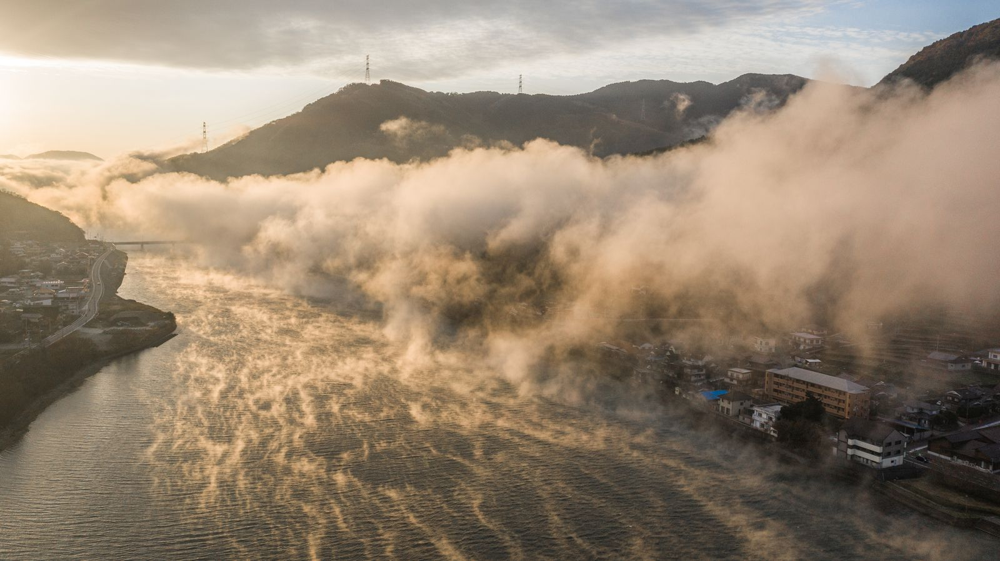
12月肱川あらしDECEMBER
冬期
冬の大洲の主役。早起きした人だけが見られる景色です。
例年は毎年行われている行事（日程は年によって変わります）、見頃は気象・季節ものです。その年の日付は、上の「この先2週間」と各行事の案内でご確認ください。
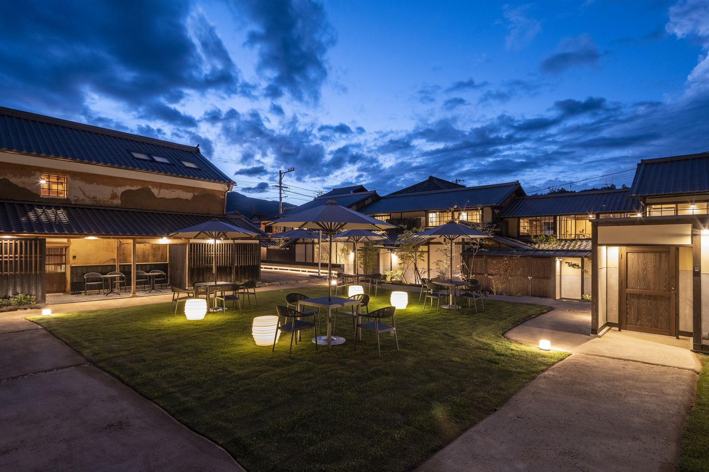
分散型ホテル「NIPPONIA HOTEL 大洲 城下町」は、城下町に点在する再生町家31室に泊まり、まちを歩いて食事に向かう「まち全体がホテル」の宿です。レストランでは、同じ土で育った野菜を同じ土でつくられた器（砥部焼）に盛る——空気も土も水も含めた「地産地消」を、神戸のレストランガイドで4年連続1位を獲得したグランシェフが仕立てます。
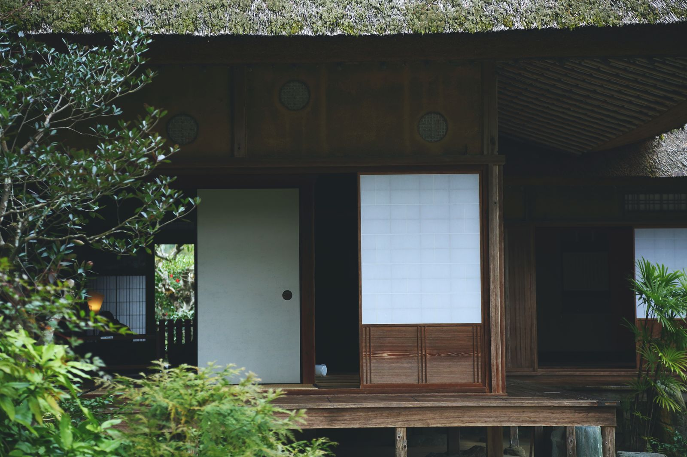
国の重要文化財であり名勝・臥龍山荘は、明治時代に木蝋貿易で財をなした河内寅次郎が建てた数寄屋建築です。彼が賓客をもてなした「数寄の宴」を再現する試みでは、肱川から舟で客人を迎え、不老庵での呈茶ののち、能や食が往時のかたちで供されました（2021年12月に実証）。文化財を「見る」から「往時の歴史体験をする」へ——大洲が全国に先駆けて取り組んできた文化財活用のかたちです。
「大洲城キャッスルステイ」は、日本で初めての木造天守での宿泊事業です。1617年、大洲藩主・加藤貞泰が米子から大洲に転封されたときの記録から入城の様子を再現し、食事には江戸時代に藩主へ献上されたと伝わるこの地域の食材を、グランシェフが現代風に仕立てて提供します。鉄砲隊の祝砲、伝統芸能の舞——お客さまを迎えるその舞台が、そのまま地域の伝統文化が継承される場になっています。2020年7月の開始から66組（2026年5月時点）。
泊まりのご予約や施設の詳しいことは、各施設の公式サイトへどうぞ（このLINEでは受け付けていません）。
「365日観光カレンダー」は「おおず未来のまちづくり構想」（2026年3月）の観光アクションに掲げられた取り組みです。行事の時期は年によって変わります。確定日程は各行事の案内でご確認ください。
写真：大洲まちづくりブック・キタ・マネジメント・OZU 555 PROJECT 写真共有フォルダ・セキ撮影・予報会青野さん提供。本文の一部は「大洲まちづくりブック」（2026年5月・キタ・マネジメント発行）より。行事の日付は大洲市・Visit Ozu・大洲城の公式の案内で確かめたもの（10月1日に確認）。